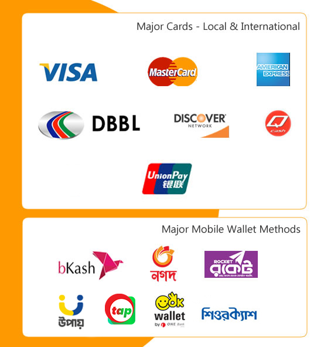

We won't be able to stop disasters from happening. On the contrary, climate change may increase the frequency and severity of floods, droughts and storms.
But we are better equipped today to prepare for them and reduce their impact
Donate Today
Help people to feel their emotions, rather than repress them
Our Donate Plan
Ask people to pay later and thank them right away
Food For a Family
Trying new and different foods over the years, from different restaurants, made me realize that there are many different kinds of flavors in all kinds of foods, of course some better than others. When I was raised they always fed me homemade food either from my mother or from my grandmother and as time went by everyone was very familiar with the different meals that they would cook everyday. Growing up we only had two meals per day, breakfast and dinner there was never a meal in between those but it never affected any of us because once it came down to dinner we ate well until we were fullDuring holidays every year we gather at a relative’s house to enjoy the celebration and to eat food in with each other. In total at least eight families are joined and celebrate each holiday of the year. Food for my family though is complicated everyday. Since there are eight in one house with different opinions the cooked meals are not always appealing to everyone. On a everyday basis my mother cooks homemade meals due to her always being home. While every single member in my family eats three meals or more a day for me two meals is enough because breakfast is unpleasant for some unknown reason. Some food is appears unappealing to many of us. Me and my sister do not enjoy eating meat regularly as opposed to my relatives who eat it daily. I was raised by my mother and her side of the family for three years, and they eat healthy. So instead of enjoying products like meat and other things similar being raised by them made me accustomed to not eating unhealthy products daily. Vegetables and fruit are some of the best foods, while my siblings dislike those things or barely eat some at all. Dinner is where we usually eat together because everyone is home. Meals are always a hassle due to us being a family of eight not all are to have the same opinions. In a way
Shelter for a family
Trying new and different foods over the years, from different restaurants, made me realize that there are many different kinds of flavors in all kinds of foods, of course some better than others. When I was raised they always fed me homemade food either from my mother or from my grandmother and as time went by everyone was very familiar with the different meals that they would cook everyday. Growing up we only had two meals per day, breakfast and dinner there was never a meal in between those but it never affected any of us because once it came down to dinner we ate well until we were fullDuring holidays every year we gather at a relative’s house to enjoy the celebration and to eat food in with each other. In total at least eight families are joined and celebrate each holiday of the year. Food for my family though is complicated everyday. Since there are eight in one house with different opinions the cooked meals are not always appealing to everyone. On a everyday basis my mother cooks homemade meals due to her always being home. While every single member in my family eats three meals or more a day for me two meals is enough because breakfast is unpleasant for some unknown reason. Some food is appears unappealing to many of us. Me and my sister do not enjoy eating meat regularly as opposed to my relatives who eat it daily. I was raised by my mother and her side of the family for three years, and they eat healthy. So instead of enjoying products like meat and other things similar being raised by them made me accustomed to not eating unhealthy products daily. Vegetables and fruit are some of the best foods, while my siblings dislike those things or barely eat some at all. Dinner is where we usually eat together because everyone is home. Meals are always a hassle due to us being a family of eight not all are to have the same opinions. In a way
Education for a child
Trying new and different foods over the years, from different restaurants, made me realize that there are many different kinds of flavors in all kinds of foods, of course some better than others. When I was raised they always fed me homemade food either from my mother or from my grandmother and as time went by everyone was very familiar with the different meals that they would cook everyday. Growing up we only had two meals per day, breakfast and dinner there was never a meal in between those but it never affected any of us because once it came down to dinner we ate well until we were fullDuring holidays every year we gather at a relative’s house to enjoy the celebration and to eat food in with each other. In total at least eight families are joined and celebrate each holiday of the year. Food for my family though is complicated everyday. Since there are eight in one house with different opinions the cooked meals are not always appealing to everyone. On a everyday basis my mother cooks homemade meals due to her always being home. While every single member in my family eats three meals or more a day for me two meals is enough because breakfast is unpleasant for some unknown reason. Some food is appears unappealing to many of us. Me and my sister do not enjoy eating meat regularly as opposed to my relatives who eat it daily. I was raised by my mother and her side of the family for three years, and they eat healthy. So instead of enjoying products like meat and other things similar being raised by them made me accustomed to not eating unhealthy products daily. Vegetables and fruit are some of the best foods, while my siblings dislike those things or barely eat some at all. Dinner is where we usually eat together because everyone is home. Meals are always a hassle due to us being a family of eight not all are to have the same opinions. In a way
Their lives depend on your donation
UNICEF mobilizes life-saving supplies for children affected by humanitarian crises. We work toward early recovery, long-term development and preparedness for the futuUNICEF mobilizes life-saving supplies for children affected by humanitarian crises. We work toward early recovery, long-term development and preparedness the.
Their lives depend on your donation
UNICEF mobilizes life-saving supplies for children affected by humanitarian crises. We work toward early recovery, long-term development and preparedness for the futuUNICEF mobilizes life-saving supplies for children affected by humanitarian crises. We work toward early recovery, long-term development and preparedness the.
Donate Using Verified Methods
SSL Commerz
Amar Pay

Get My Updates
If you get in touch with someone, you contact them by writing to them or phoning them. If you are, keep, or stay in touch with them, you write, phone, or visit each other regularly.